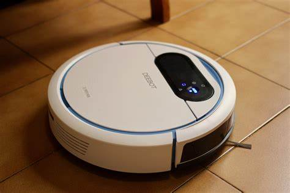
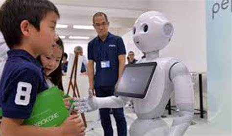

Asistente Virtual
Ofrecemos el servicio de creación de asistentes virtuales personalizados que se adaptan a las necesidades de tu empresa. Estos asistentes pueden realizar tareas específicas de manera autónoma y ahorrar tiempo y recursos valiosos para tu negocio. Podemos desarrollar asistentes virtuales para tareas como atención al cliente, gestión de pedidos y manejo de datos.
Robot de limpieza
Nuestro servicio de robots de limpieza ofrece una solución innovadora y eficiente para la limpieza de espacios comerciales y residenciales. Los robots son capaces de recorrer y limpiar habitaciones y pasillos de manera autónoma, ahorrando tiempo y esfuerzo en la limpieza diaria. También ofrecemos la personalización de robots de limpieza para adaptarse a las necesidades específicas de tu espacio.
Robot Móvil
Nuestro servicio de robots móviles ofrece una solución para la automatización de procesos logísticos y de producción en tu empresa. Los robots móviles son capaces de transportar cargas de manera autónoma a través de un espacio determinado, ahorrando tiempo y recursos valiosos. También podemos personalizar los robots móviles para que se adapten a las necesidades específicas de tu empresa.
Robot Maestro
Nuestro servicio de robots maestros ofrece una solución para la automatización de tareas complejas en tu empresa. Los robots maestros son capaces de controlar y coordinar una serie de robots más pequeños para realizar una tarea específica de manera autónoma. Esto puede ahorrar tiempo y recursos valiosos en tareas complejas que de otro modo requerirían una gran cantidad de mano de obra. También ofrecemos la personalización de robots maestros para adaptarse a las necesidades específicas de tu empresa.
